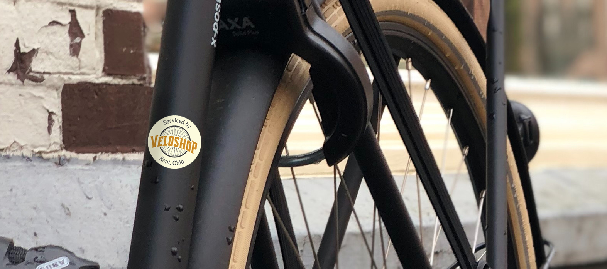
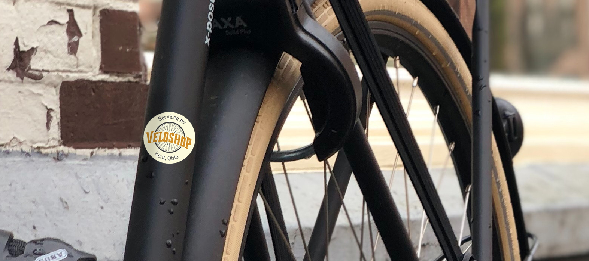

Veloshop
Veloshop is a bike shop specializing in modern and vintage bike sales and maintenance. They needed a logotype that would match their mechanical, yet friendly community minded personality.
The word "Velo" in French is a word for Bicycle. France has been heavily influential to the history of the sport. To pay homage, I found inspiration in the typography of vintage bike head badge designs. I determined a wedge serif would be a good way to express their personality.
Their logo proudly displays at a range of sizes from merchandise, price tags and frame stickers.
 
